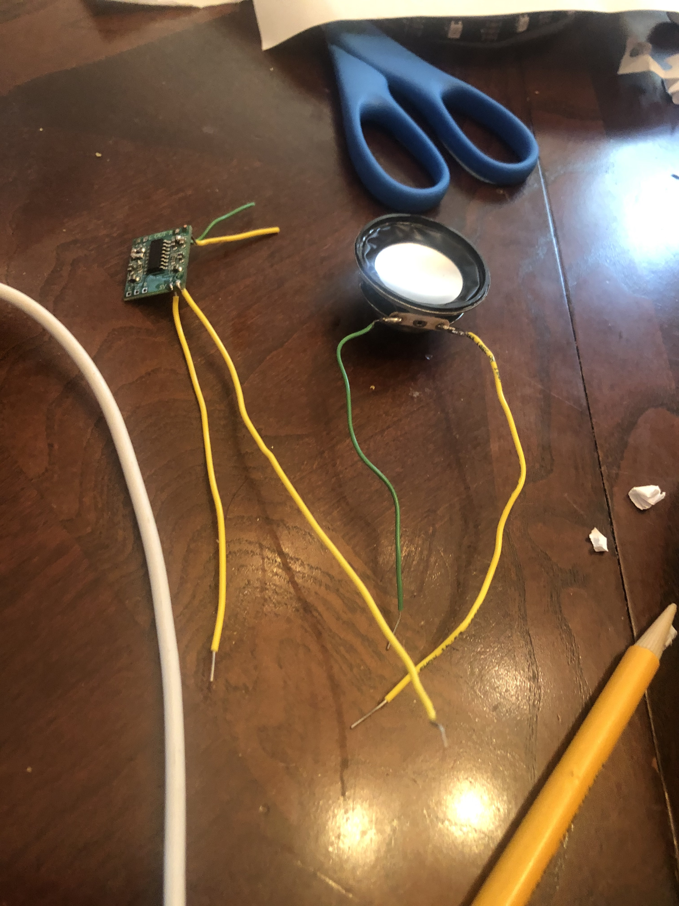

Week 9: IoT Device
Goal: Connect multiple Arduino Boards together and make them do something!
This week we learned about how to connect multiple boards together, utilizing both radio signalling as well as wired connections. The usefulness of IoT is in the fact that you are able to transmit data from multiple boards, and process the informnation to get other boards to do something else. I have tried uploading and reuploading Arduino, the boards, etc but am still having trouble in simply uploading. I believe there is something wrong with my microUSB cord since the error says "there is no device found on cu.usbmodem14301". Update: I have now tried multiple microUSBs and none of them work. I am lost. I have managed to upload into the ItsyBitsy, so it doesnt make sense why I can upload to one board and not the other...

While this did not work, I took apart an old speaker in my house and took the speaker driver. I was able to resolder this and plug it in directly to my metro. The audio only accepts arduino coded files right now so I have been trying to convert midi files to arduino files using https://extramaster.net/tools/midiToArduino/. I have not figured out how to use the amplifier yet, and as such the sound is not playing as loudly as I hoped. Also the converter (MIDI to Arduino) has been slightly unreliable which I have been testing on different files. Oftentimes, you only hear one tune for a long period of time, do to duration errors. Will continue to work on this and excited to test this out using the Huzzah next week to test bluetooth connections. The website I followed for this was https://www.youtube.com/watch?v=MWwqIDTJSPY
